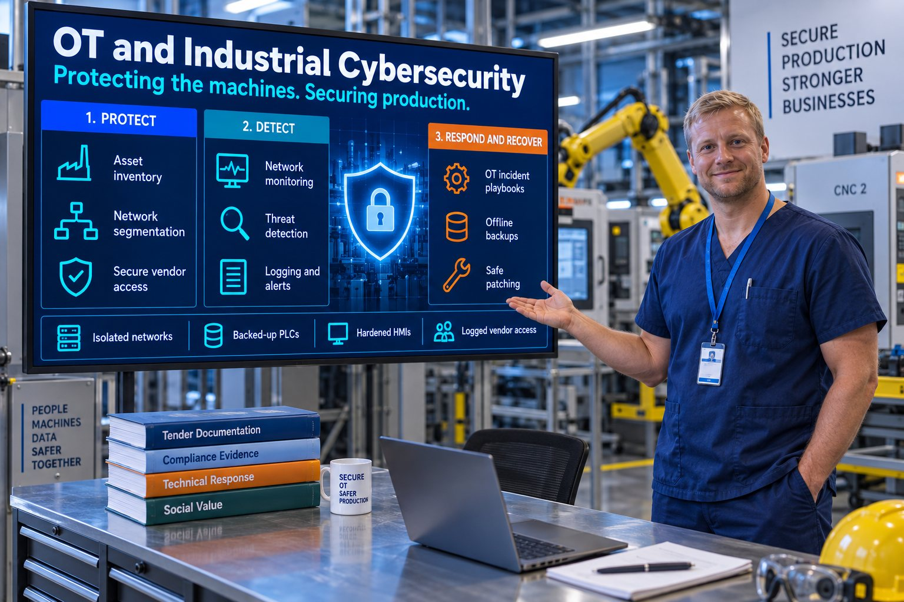

Industrial Systems
PLCs, HMIs, SCADA networks, robotics and CNC machines identified and assessed.

Department: Surgical Theatre Protection
OT security protects the machines. The PLCs, the HMIs, the SCADA networks, the robots, the CNCs — everything that turns raw material into product.
Without it, a buyer assumes production downtime risk, unsafe machinery, uncontrolled engineering changes, exposure to ransomware, compromised PLC logic and unsafe remote vendor access.
On some OEM frameworks, this is not a scoring question at all. It is a pass-or-fail gate.
Most manufacturers assume cyber-attacks target the office. Increasingly, they target the plant, and for good reason. PLCs rarely get patched, HMIs run operating systems that went out of support years ago, and almost nobody is monitoring OT traffic.
OT cyber is not IT cyber, and treating it as though it is causes real damage. Your IT team can patch a laptop on a Tuesday afternoon. Patch a PLC mid-run and you have scrapped a batch.
PLCs, HMIs, SCADA networks, robotics and CNC machines identified and assessed.
Production networks genuinely isolated from office IT.
Secure, logged, time-limited remote access for equipment vendors.
OT-specific incident response, offline backups and change control on the plant floor.
| Tender criterion | What this service contributes | Score effect |
|---|---|---|
| Cyber | IT and OT working to one security posture | Major |
| Risk | OT maturity means low supply-chain risk | Major |
| Operational Resilience | Backups, segmentation and monitoring | Major |
| Safety | Protected control systems | Major |
| Compliance | Cyber Essentials Plus, ISO and safety evidence | Moderate |
| Delivery | Reduced downtime | Moderate |
OT security protects the systems that run production: PLCs, HMIs, SCADA, robots and CNC machines. Unlike office IT, the priority is safety and keeping the line running, so you cannot simply patch or restart a machine mid-run. It needs segmentation, controlled vendor access and planned maintenance windows. IEC 62443 is the main international standard.
Only if the factory systems are in scope. Cyber Essentials covers devices that can reach the internet, and you can exclude production systems if they are properly separated from the office network by a firewall or similar. Buyers, especially OEMs, may still ask how your OT is protected, so separation needs to be real and documented.
Typically: is production separated from office IT, how is remote vendor access controlled and logged, are PLC programs backed up and version-controlled, can you recover from ransomware, and is there an OT incident response plan. On some OEM frameworks these are pass or fail questions, not scored ones.
Sources: Cyber Essentials overview (NCSC)
Reviewed by Rob Atkins, Founder & Principal Consultant, Your Best Solution Limited. Last updated .